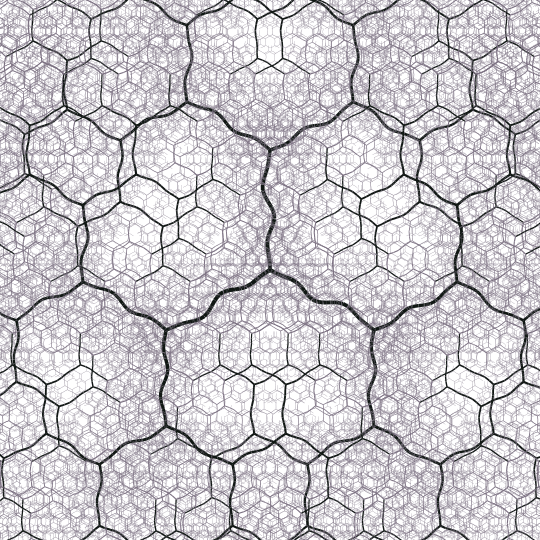
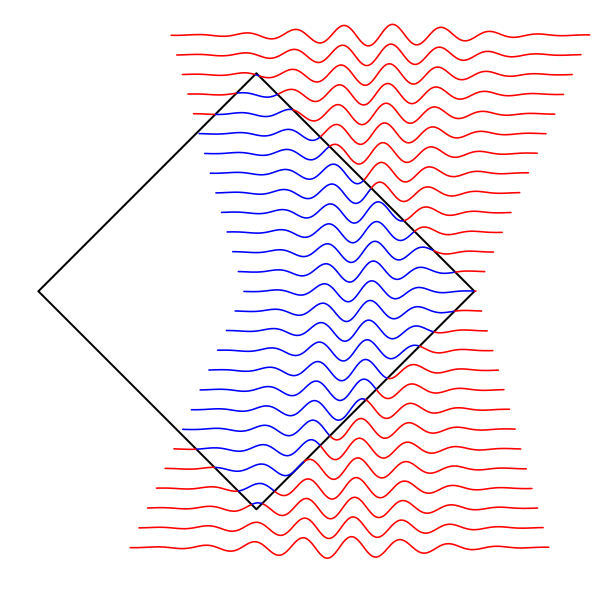
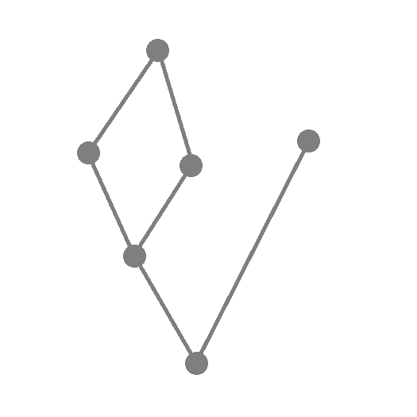

2. Principles for a Distinguished Global Vacuum: Entropy and the Vacuum State in Causal Set Theory
Joshua Y. L. Jones
PDF: [HERE]
ArXiv: [2412.07832]
Link: [HERE]

Joshua Y. L. Jones, Yasaman K. Yazdi
PDF: [HERE]
ArXiv: [2606.00311]
Link: [Coming]

Joshua Y. L. Jones, Yasaman K. Yazdi
PDF: [HERE]
ArXiv: [2602.16782]
Link: [HERE]
Job Feldbrugge, Joshua Y. L. Jones
PDF: [HERE]
ArXiv: [2501.16323]
Link: [10.1103/PhysRevD.111.083524]
Joshua Y. L. Jones
PDF: [HERE]
ArXiv: [2412.07832]
Link: [HERE]

Callum F. Duffy, Joshua Y. L. Jones, Yasaman K. Yazdi
PDF: [HERE]
ArXiv: [2110.07627]
Link: [10.1088/1361-6382/ac5493]